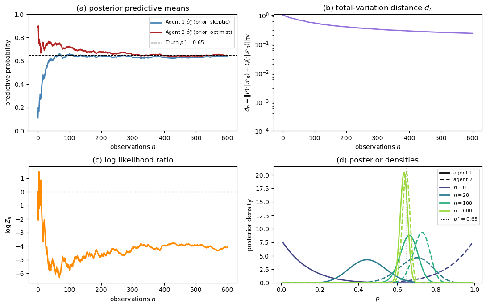
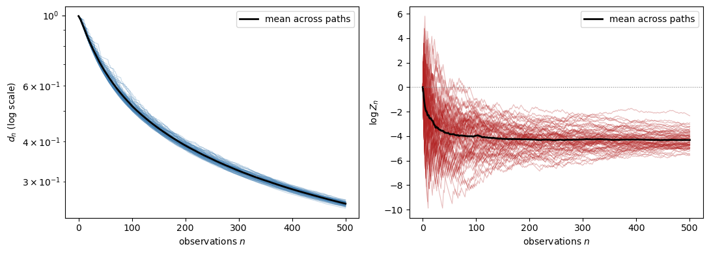
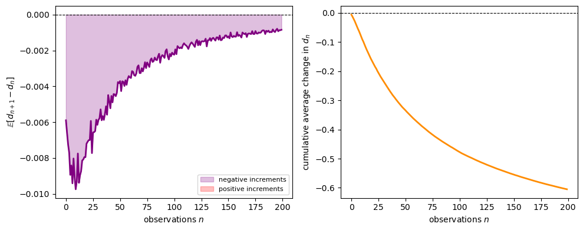
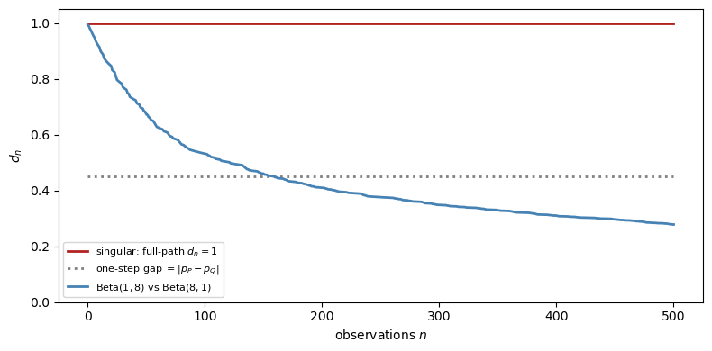
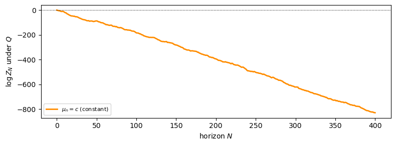
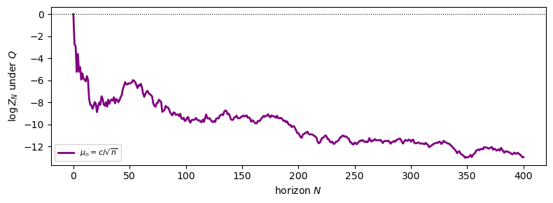
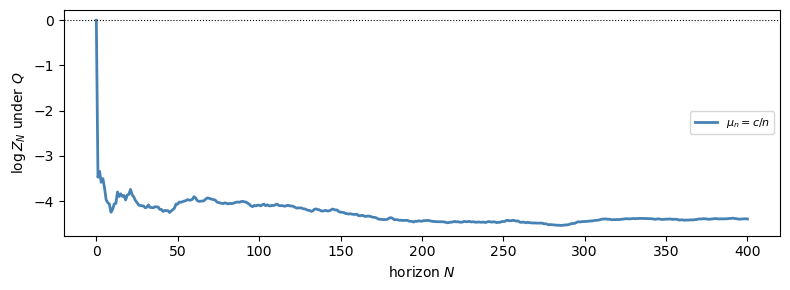
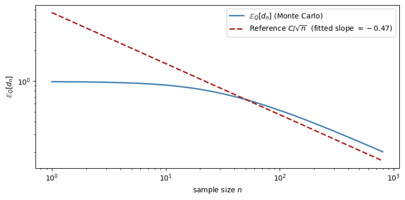

34. Merging of Opinions: The Blackwell–Dubins Theorem#
34.1. Overview#
This lecture studies the merging-of-opinions theorem of Blackwell and Dubins [1962].
The theorem asks a simple question:
If two agents hold different prior beliefs about a stochastic process but observe the same stream of data indefinitely, will their probability assessments eventually converge?
The answer is yes under an absolute-continuity condition.
If \(Q \ll P\) (that is, \(P\) dominates \(Q\)), then the conditional distributions under \(P\) and \(Q\) over the entire future path merge in total variation, \(Q\)-almost surely.
If in addition \(P \ll Q\) (so that \(P \sim Q\)), then the same conclusion holds under both agents’ probabilities.
This result connects to several other ideas:
Bayesian consistency: posterior predictions approach the truth when the prior lies in the right absolute-continuity class (Likelihood Ratio Processes and Bayesian Learning).
Agreement results: common data can eliminate disagreement even when agents start from different priors (Aumann [1976]).
Kakutani’s dichotomy: for product measures, equivalence versus singularity can be read from a Hellinger criterion.
We develop the theory in discrete time and then sketch the continuous-time analogue.
Throughout, we use the Beta–Bernoulli model as a running example.
Two agents observe the same stream of coin flips but start from different priors over the coin’s bias.
Let us start with some imports.
import numpy as np
import matplotlib.pyplot as plt
from scipy.stats import beta as beta_dist
from scipy.special import betaln
34.2. Probability measures on sequence spaces#
34.2.1. The sequence space and its filtration#
Let \((S, \mathscr{S})\) be a standard Borel space (i.e., a measurable space isomorphic to a Borel subset of a complete separable metric space), called the signal space.
The standard Borel assumption guarantees the existence of regular conditional distributions, which the theorem requires.
Set \(\Omega = S^{\mathbb{N}}\), the set of all infinite sequences \(\omega = (x_1, x_2, \ldots)\) with \(x_n \in S\), equipped with the product \(\sigma\)-algebra \(\mathscr{F} = \mathscr{S}^{\otimes \mathbb{N}}\).
For each \(n \geq 1\), define the finite-horizon \(\sigma\)-algebra
so \(\mathscr{F}_1 \subseteq \mathscr{F}_2 \subseteq \cdots \subseteq \mathscr{F}\).
Define the tail \(\sigma\)-algebra \(\mathscr{F}_\infty = \sigma\!\left(\bigcup_{n \geq 1} \mathscr{F}_n\right)\), which encodes everything that can eventually be learned.
The collection \(\{\mathscr{F}_n\}_{n \geq 1}\) is the natural filtration generated by the observation process; \(\mathscr{F}_n\) encodes everything that can be learned from the first \(n\) data points.
Let \(P\) and \(Q\) denote two probability measures on \((\Omega, \mathscr{F})\).
Write \(P_n = P|_{\mathscr{F}_n}\) and \(Q_n = Q|_{\mathscr{F}_n}\) for their restrictions to the history up to time \(n\).
34.2.2. Absolute continuity#
Definition 34.1 (Absolute Continuity)
\(P\) is absolutely continuous with respect to \(Q\), written \(P \ll Q\), if \(Q(A) = 0\) implies \(P(A) = 0\) for every \(A \in \mathscr{F}\).
They are mutually absolutely continuous, or equivalent, written \(P \sim Q\), if both \(P \ll Q\) and \(Q \ll P\).
\(P\) is locally absolutely continuous with respect to \(Q\) if \(P_n \ll Q_n\) for every \(n \geq 1\).
Global absolute continuity \(P \ll Q\) implies local absolute continuity, but not conversely.
Mutual absolute continuity means the two agents agree on which events are possible.
They can disagree about probabilities, but neither agent rules out an event the other deems possible.
34.2.3. Total variation distance#
Definition 34.2 (Total Variation Distance)
For two probability measures \(\mu\) and \(\nu\) on \((E, \mathscr{E})\),
where \(\lambda\) is any dominating measure, meaning \(\mu \ll \lambda\) and \(\nu \ll \lambda\) (for example, \(\lambda = \mu + \nu\)).
Equivalently, \(\|\mu - \nu\|_{\mathrm{TV}} \in [0,1]\), with 0 meaning \(\mu = \nu\) and 1 meaning \(\mu \perp \nu\) (mutual singularity).
When \(\mu \ll \nu\) with \(f = d\mu/d\nu\),
Exercise 34.1
Show the identity above.
Hint: Start from \(\|\mu - \nu\|_{\mathrm{TV}} = \tfrac{1}{2}\,\mathbb{E}_\nu[|f - 1|]\) (which follows from taking \(\nu\) as the dominating measure) and use the fact that \(\mathbb{E}_\nu[f] = 1\).
Solution
Since \(\mu \ll \nu\), we can use \(\nu\) as the dominating measure, so \(d\mu/d\nu = f\) and \(d\nu/d\nu = 1\), giving
Write \(|f-1| = (f-1)^+ + (1-f)^+\).
Since \(\mu\) is a probability measure, \(\mathbb{E}_\nu[f] = 1\), so the two parts contribute equally: \(\mathbb{E}_\nu[(f-1)^+] = \mathbb{E}_\nu[(1-f)^+]\).
Therefore \(\tfrac{1}{2}\,\mathbb{E}_\nu[|f-1|] = \mathbb{E}_\nu[(f-1)^+]\).
Next, note that \((f-1)^+ = f - \min(f,1)\), so \(\mathbb{E}_\nu[(f-1)^+] = \mathbb{E}_\nu[f] - \mathbb{E}_\nu[\min(f,1)] = 1 - \mathbb{E}_\nu[\min(f,1)]\).
Total variation is one of the strongest standard notions of distance between probability measures.
If two measures are close in total variation, then their probabilities of every event are close.
34.2.4. The merging question#
The Blackwell–Dubins theorem studies the conditional distribution of the future given the past.
At time \(n\), after observing \((x_1,\ldots,x_n)\), each agent forms a conditional distribution over all future events:
These are probability measures on the whole future path, not just the next observation.
The merging question asks whether
almost surely as \(n \to \infty\).
34.3. The likelihood-ratio martingale#
Our main tool is the Radon–Nikodym derivative process.
34.3.1. The likelihood ratio#
Since \(Q \ll P\) implies \(Q_n \ll P_n\) for every \(n\), the Radon–Nikodym theorem guarantees the existence of the likelihood ratio
The key structural property is that global absolute continuity \(Q \ll P\) implies the existence of an overall Radon–Nikodym derivative \(Z = dQ/dP\) on all of \((\Omega, \mathscr{F})\), and
That is, \(\{Z_n, \mathscr{F}_n\}_{n \geq 1}\) is a non-negative, uniformly integrable \(P\)-martingale.
Lemma 34.1 (Martingale Convergence)
The likelihood-ratio process \(\{Z_n\}\) satisfies:
\(Z_n \to Z_\infty\) \(P\)-almost surely as \(n \to \infty\).
\(Z_\infty = \mathbb{E}_P[Z \,|\, \mathscr{F}_\infty]\) \(P\)-a.s.
\(Z_n \to Z_\infty\) in \(L^1(P)\): \(\;\mathbb{E}_P[|Z_n - Z_\infty|] \to 0\).
Proof sketch. Non-negativity and the martingale property give boundedness in \(L^1(P)\).
Then almost-sure convergence follows from Doob’s martingale convergence theorem Doob [1953].
Uniform integrability (which follows from \(Z \in L^1(P)\) via the conditional Jensen inequality) upgrades this to \(L^1(P)\) convergence. \(\square\)
34.3.2. Connecting conditional measures to the likelihood ratio#
The following identity connects the likelihood ratio to the conditional distributions.
On the set \(\{Z_n > 0\}\), the Radon–Nikodym derivative of \(Q(\,\cdot\,|\,\mathscr{F}_n)\) with respect to \(P(\,\cdot\,|\,\mathscr{F}_n)\) is
Applying the total-variation formula with \(f = Z_\infty / Z_n\) then gives
Multiplying through by \(Z_n\) and taking the \(P\)-expectation (then using \(\mathbb{E}_P[Z_n \, g(\mathscr{F}_n)] = \mathbb{E}_Q[g(\mathscr{F}_n)]\) for \(\mathscr{F}_n\)-measurable \(g\)):
So the \(L^1(P)\) convergence of the martingale controls how fast the total variation distance goes to zero.
34.4. The Blackwell–Dubins theorem#
Theorem 34.1 (Blackwell–Dubins (1962))
Let \(P\) and \(Q\) be probability measures on \((\Omega, \mathscr{F})\) with \(Q \ll P\).
Define
Then \(d_n \to 0\) \(Q\)-almost surely.
The proof has three steps.
Step 1. Representation of \(d_n\) via \(Z_n\).
As shown above, \(d_n\) can be written in terms of \(Z_\infty / Z_n\), where \(Z_n = \mathbb{E}_P[Z \,|\, \mathscr{F}_n]\) and \(Z = dQ/dP\).
This reduces the problem to a statement about one martingale under \(P\).
Step 2. \(\{d_n\}\) is a non-negative supermartingale.
Conditioning on more information reduces distinguishability on average.
Formally, because \(P(\,\cdot\,|\,\mathscr{F}_n) = \mathbb{E}[P(\,\cdot\,|\,\mathscr{F}_{n+1})\,|\,\mathscr{F}_n]\) and total variation is convex,
So \(\{d_n, \mathscr{F}_n\}\) is a non-negative \(Q\)-supermartingale in \([0,1]\).
By Doob’s theorem, \(d_n \to d_\infty\) \(Q\)-almost surely for some \([0,1]\)-valued random variable \(d_\infty\).
Step 3. The almost-sure limit is zero.
From Step 1 and the \(L^1\) bound:
The right-hand side vanishes by \(L^1(P)\) convergence of the martingale.
Hence \(d_n \to 0\) in \(L^1(Q)\) and therefore in \(Q\)-probability.
Since \(d_n\) already converges \(Q\)-almost surely, its limit must satisfy \(d_\infty = 0\) \(Q\)-a.s. \(\square\)
Remark 34.1 (One-Sided vs. Mutual Absolute Continuity)
The theorem requires only \(Q \ll P\), not \(P \ll Q\).
One-sided absolute continuity \(Q \ll P\) gives merging \(Q\)-almost surely.
Since \(Q \ll P\) means every \(P\)-null set is also \(Q\)-null, \(Q\)-a.s. convergence does not automatically imply \(P\)-a.s. convergence.
To conclude that \(d_n \to 0\) under both agents’ measures, one needs mutual absolute continuity \(P \sim Q\).
With \(P \ll Q\) added, the proof can be run with the roles of \(P\) and \(Q\) swapped, yielding \(d_n \to 0\) \(P\)-a.s. as well.
Remark 34.2 (Sharpness)
Absolute continuity matters.
When \(P\) and \(Q\) are singular, merging can fail completely.
The point-mass example below has \(d_n = 1\) for every \(n\).
For product measures, Kakutani’s theorem later gives a sharp equivalence-versus-singularity dichotomy.
34.5. The Beta–Bernoulli model#
Before turning to Python, we introduce the main example used throughout the simulations.
34.5.1. Model#
Suppose the data stream \((x_1, x_2, \ldots)\) consists of IID Bernoulli draws with unknown probability \(p^* \in (0,1)\).
Agent \(i\) has a Beta prior:
After observing \(n\) draws with \(k\) successes, Bayes’ rule yields the posterior
and the one-step-ahead predictive probability is
By the strong law of large numbers, \(k/n \to p^*\) almost surely, so both \(\hat{p}_1^n\) and \(\hat{p}_2^n\) converge to \(p^*\) regardless of the agents’ initial priors \((\alpha_i, \beta_i)\).
34.5.2. The marginal likelihood and likelihood ratio#
For each fixed value of \(p \in (0,1)\), let \(P_p\) denote the IID Bernoulli\((p)\) probability law on infinite sequences.
Agent \(i\) does not know \(p\).
Instead, agent \(i\) places the prior density \(\pi_i\) on \(p\), which induces a probability measure \(P_i\) on data sequences via
So \(P_i\) is the agent’s marginal probability measure over histories after averaging over uncertainty about \(p\).
In particular, if \(x^n\) is an exact observed history with \(k\) successes, then \(P_i(x^n)\) means the probability that agent \(i\) assigns to that history under this mixture measure.
To compute it, start from the Beta density
Given \(p\), the probability of that ordered history is \(p^k (1-p)^{n-k}\).
Therefore
where \(B(a,b) = \Gamma(a)\Gamma(b)/\Gamma(a+b)\) is the beta function.
This expression is the probability of the ordered history \(x^n\).
It depends on the data only through the count \(k\), so histories with the same number of successes receive the same probability.
The likelihood ratio at time \(n\) is therefore
This is a martingale under \(P_2\) (agent 2’s probability) and converges almost surely to a finite positive limit \(Z_\infty\), reflecting the fact that \(P_1 \sim P_2\) for any Beta priors with positive parameters.
34.5.3. The exact Blackwell–Dubins distance#
For the Beta–Bernoulli model, there is a clean formula for \(d_n\).
By de Finetti’s theorem, each agent’s conditional distribution of the future infinite sequence given the past is a mixture of IID Bernoulli\((p)\) processes, where \(p\) is drawn from the posterior Beta distribution.
Since the Bernoulli\((p)^{\infty}\) measures for different \(p\) are mutually singular (the empirical frequency identifies \(p\) exactly), the TV distance between the two conditional distributions over the future equals the TV distance between the two posterior distributions over the parameter \(p\).
The TV distance is
As \(k_n/n \to p^*\) and \(n \to \infty\), both posterior Betas concentrate around \(p^*\) with variance of order \(1/n\), so \(d_n \to 0\).
The following code implements the Beta–Bernoulli updating, predictive probabilities, TV distance, and likelihood-ratio computations described above.
def beta_bernoulli_update(data, a0, b0):
"""
Sequential Beta-Bernoulli Bayesian updating.
"""
n = len(data)
cum_k = np.concatenate([[0], np.cumsum(data)]) # cumulative successes
ns = np.arange(n + 1) # 0, 1, ..., n
a_post = a0 + cum_k
b_post = b0 + (ns - cum_k)
return a_post, b_post
def predictive_prob(a_post, b_post):
"""One-step-ahead predictive probability P(X=1 | data)."""
return a_post / (a_post + b_post)
def tv_distance_beta(a1, b1, a2, b2, n_grid=2000):
"""
TV distance between Beta(a1,b1) and Beta(a2,b2) via grid quadrature.
Uses a fine grid on (0,1).
"""
x = np.linspace(1e-8, 1 - 1e-8, n_grid)
dx = x[1] - x[0]
p1 = beta_dist.pdf(x, a1, b1)
p2 = beta_dist.pdf(x, a2, b2)
return 0.5 * np.sum(np.abs(p1 - p2)) * dx
def log_likelihood_ratio(data, a1, b1, a2, b2):
"""
Log likelihood ratio log Z_n = log P1_n(data) - log P2_n(data)
for every prefix of `data`.
Returns an array of length len(data) + 1, starting at 0 (before data).
"""
a1p, b1p = beta_bernoulli_update(data, a1, b1)
a2p, b2p = beta_bernoulli_update(data, a2, b2)
log_P1 = betaln(a1p, b1p) - betaln(a1, b1)
log_P2 = betaln(a2p, b2p) - betaln(a2, b2)
return log_P1 - log_P2
def run_simulation(p_true, a1, b1, a2, b2, n_steps, seed=0):
"""
Simulate one realisation of the merging experiment.
Returns a dict with arrays of length n_steps + 1 (index 0 = prior).
"""
rng = np.random.default_rng(seed)
data = rng.binomial(1, p_true, n_steps)
a1p, b1p = beta_bernoulli_update(data, a1, b1)
a2p, b2p = beta_bernoulli_update(data, a2, b2)
pred1 = predictive_prob(a1p, b1p)
pred2 = predictive_prob(a2p, b2p)
tv_1step = np.abs(pred1 - pred2)
# TV between posterior Betas; in this model this equals d_n
tv_beta = np.array([
tv_distance_beta(a1p[i], b1p[i], a2p[i], b2p[i])
for i in range(n_steps + 1)
])
log_Z = log_likelihood_ratio(data, a1, b1, a2, b2)
return dict(data=data, pred1=pred1, pred2=pred2,
tv_1step=tv_1step, tv_beta=tv_beta, log_Z=log_Z)
34.5.4. Simulation#
We choose two agents with very different beliefs about the bias of a coin whose true probability of heads is \(p^* = 0.65\).
Agent 1 (skeptic): prior \(\mathrm{Beta}(1, 8)\), so \(\hat{p}_1^0 = 1/9 \approx 0.11\).
Agent 2 (optimist): prior \(\mathrm{Beta}(8, 1)\), so \(\hat{p}_2^0 = 8/9 \approx 0.89\).
Both priors are supported on all of \((0,1)\), so \(P_1 \sim P_2\).
Blackwell–Dubins guarantees merging.
The figure below shows what that merging looks like.
p_true = 0.65
a1, b1 = 1.0, 8.0 # skeptic
a2, b2 = 8.0, 1.0 # optimist
n_steps = 600
sim = run_simulation(p_true, a1, b1, a2, b2, n_steps, seed=7)
steps = np.arange(n_steps + 1)
fig, axes = plt.subplots(2, 2, figsize=(11, 7))
ax = axes[0, 0]
ax.plot(steps, sim['pred1'], color='steelblue', lw=2,
label=r'Agent 1 $\hat p_1^n$ (prior: skeptic)')
ax.plot(steps, sim['pred2'], color='firebrick', lw=2,
label=r'Agent 2 $\hat p_2^n$ (prior: optimist)')
ax.axhline(p_true, color='black', lw=1.0, ls='--',
label=f'Truth $p^*={p_true}$')
ax.set_xlabel('observations $n$')
ax.set_ylabel('predictive probability')
ax.set_title('(a) posterior predictive means')
ax.legend(fontsize=8)
ax.set_ylim(0, 1)
ax = axes[0, 1]
ax.semilogy(steps, sim['tv_beta'] + 1e-10, color='mediumpurple', lw=2)
ax.set_xlabel('observations $n$')
ax.set_ylabel(
r'$d_n = \|P(\cdot|\mathscr{F}_n)'
r' - Q(\cdot|\mathscr{F}_n)\|_{\mathrm{TV}}$'
)
ax.set_title(r'(b) total-variation distance $d_n$')
ax.set_ylim(bottom=1e-4)
ax = axes[1, 0]
ax.plot(steps, sim['log_Z'], color='darkorange', lw=2)
ax.axhline(0, color='black', lw=0.8, ls=':')
ax.set_xlabel('observations $n$')
ax.set_ylabel(r'$\log Z_n$')
ax.set_title(r'(c) log likelihood ratio')
ax = axes[1, 1]
xs = np.linspace(0.01, 0.99, 500)
epochs = [0, 20, 100, n_steps]
colors = plt.cm.viridis(np.linspace(0.2, 0.85, len(epochs)))
for epoch, col in zip(epochs, colors):
k_e = int(np.sum(sim['data'][:epoch]))
pdf1 = beta_dist.pdf(xs, a1 + k_e, b1 + epoch - k_e)
pdf2 = beta_dist.pdf(xs, a2 + k_e, b2 + epoch - k_e)
ax.plot(xs, pdf1, color=col, lw=2, ls='-')
ax.plot(xs, pdf2, color=col, lw=2, ls='--')
ax.axvline(p_true, color='black', lw=1.0, ls=':', label=f'$p^*={p_true}$')
ax.set_xlabel('$p$')
ax.set_ylabel('posterior density')
ax.set_title('(d) posterior densities')
from matplotlib.lines import Line2D
handles = [
Line2D([0], [0], color='black', lw=2, label='agent 1'),
Line2D([0], [0], color='black', lw=2, ls='--', label='agent 2'),
]
for epoch, col in zip(epochs, colors):
handles.append(Line2D([0], [0], color=col, lw=2, label=f'$n={epoch}$'))
handles.append(
Line2D([0], [0], color='black', lw=1.0, ls=':', label=f'$p^*={p_true}$')
)
ax.legend(handles=handles, fontsize=8)
ax.set_ylim(bottom=0)
plt.tight_layout()
plt.show()

Fig. 34.1 Merging in the Beta–Bernoulli example. The four panels show posterior predictive means, the total-variation distance \(d_n\), the log likelihood ratio \(\log Z_n\), and posterior densities at selected horizons.#
The four panels show:
Panel (a): Starting from \(\hat{p}_1^0 \approx 0.11\) and \(\hat{p}_2^0 \approx 0.89\), both agents’ predictive probabilities converge to \(p^* = 0.65\).
Panel (b): The total-variation distance \(d_n\) decays to zero on a logarithmic scale, consistent with the theorem.
Panel ©: The log likelihood ratio \(\log Z_n\) converges to a finite value, which is consistent with mutual absolute continuity in this example.
Panel (d): The posterior Beta densities for the two agents start far apart (one near 0, one near 1) and progressively concentrate to the same distribution centred on the truth.
34.5.5. Almost-sure convergence across many paths#
To illustrate the almost-sure character of the theorem, we run many independent replications.
The theorem concerns almost every path under the reference measure, not just averages across paths.
N_paths = 80
n_steps = 500
fig, axes = plt.subplots(1, 2, figsize=(11, 4))
ax_tv = axes[0]
ax_log = axes[1]
tv_all = np.empty((N_paths, n_steps + 1))
logZ_all = np.empty((N_paths, n_steps + 1))
steps = np.arange(n_steps + 1)
for i in range(N_paths):
s = run_simulation(p_true, a1, b1, a2, b2, n_steps, seed=i)
tv_all[i] = s['tv_beta']
logZ_all[i] = s['log_Z']
for i in range(N_paths):
ax_tv.semilogy(steps, tv_all[i] + 1e-10, color='steelblue',
lw=0.8, alpha=0.3)
ax_tv.semilogy(steps, tv_all.mean(axis=0) + 1e-10,
color='black', lw=2, label='mean across paths')
ax_tv.set_xlabel('observations $n$')
ax_tv.set_ylabel(r'$d_n$ (log scale)')
ax_tv.legend()
for i in range(N_paths):
ax_log.plot(steps, logZ_all[i], color='firebrick',
lw=0.8, alpha=0.3)
ax_log.plot(steps, logZ_all.mean(axis=0),
color='black', lw=2, label='mean across paths')
ax_log.axhline(0, color='gray', lw=0.8, ls=':')
ax_log.set_xlabel('observations $n$')
ax_log.set_ylabel(r'$\log Z_n$')
ax_log.legend()
plt.tight_layout()
plt.show()
# Finite-horizon summary
frac_below = np.mean(tv_all[:, -1] < 0.30)
mean_final = tv_all[:, -1].mean()
print(f"Fraction of paths with d_n < 0.30 at n = {n_steps}: {frac_below:.2f}")
print(f"Mean distance at n = {n_steps}: {mean_final:.3f}")

Fig. 34.2 Almost-sure merging across many sample paths. The left panel plots the total-variation distance and the right panel plots the log likelihood ratio \(\log Z_n\).#
Fraction of paths with d_n < 0.30 at n = 500: 1.00
Mean distance at n = 500: 0.255
At this finite horizon, the distances have moved down substantially from their initial levels, but they are not yet close to zero.
That is still consistent with the theorem, because almost-sure convergence is an asymptotic statement.
34.5.6. The supermartingale property of \(d_n\)#
The proof relies on \(\{d_n\}\) being a non-negative supermartingale.
We can illustrate this numerically by looking at average increments across many paths.
diffs = np.diff(tv_all, axis=1) # shape (N_paths, n_steps)
mean_diffs = diffs.mean(axis=0) # average increment at each step
cum_sum = np.cumsum(mean_diffs) # cumulative average change
fig, axes = plt.subplots(1, 2, figsize=(10, 4))
ax = axes[0]
ax.plot(mean_diffs[:200], color='purple', lw=2)
ax.axhline(0, color='black', lw=0.8, ls='--')
ax.fill_between(range(200), mean_diffs[:200], 0,
where=(mean_diffs[:200] < 0), alpha=0.25,
color='purple', label='negative increments')
ax.fill_between(range(200), mean_diffs[:200], 0,
where=(mean_diffs[:200] > 0), alpha=0.25,
color='red', label='positive increments')
ax.set_xlabel('observations $n$')
ax.set_ylabel(r'$\mathbb{E}[d_{n+1} - d_n]$')
ax.legend(fontsize=8)
ax = axes[1]
ax.plot(cum_sum[:200], color='darkorange', lw=2)
ax.axhline(0, color='black', lw=0.8, ls='--')
ax.set_xlabel('observations $n$')
ax.set_ylabel(r'cumulative average change in $d_n$')
plt.tight_layout()
plt.show()
frac_decrease = np.mean(mean_diffs < 0)
print(f"Fraction of steps with average decrement: {frac_decrease:.2%}")

Fig. 34.3 An illustration of the supermartingale property. The plots show average increments of \(d_n\) and their cumulative sum across many simulated paths.#
Fraction of steps with average decrement: 100.00%
The average increment is negative at most steps, and the cumulative drift is downward.
This is only an illustration, not a proof, because it uses unconditional averages rather than the full conditional expectation in the theorem.
34.6. Failure of merging: mutual singularity#
What happens when the hypothesis \(Q \ll P\) fails?
The singular case is the cleanest counterexample.
34.6.1. Point-mass priors#
Suppose both agents hold degenerate (point-mass) priors:
Agent P: certain that \(p = p_P = 0.30\).
Agent Q: certain that \(p = p_Q = 0.75\).
Since \(P\) charges only sequences whose empirical frequency converges to \(0.30\), and \(Q\) charges only sequences whose empirical frequency converges to \(0.75\), the two measures are mutually singular: \(P \perp Q\).
The conditional distributions do not update, because both agents are already certain of their model.
For the theorem’s object, namely the conditional law of the entire future path,
This equality holds because the infinite-product Bernoulli measures with distinct success probabilities are singular.
If we look only one step ahead, the predictive distance is \(|p_P - p_Q| = 0.45\).
That is smaller than one, but it is not the quantity that appears in Blackwell–Dubins.
p_P = 0.30
p_Q = 0.75
n_steps = 500
tv_singular_full = np.ones(n_steps + 1)
tv_singular_1step = np.full(n_steps + 1, np.abs(p_P - p_Q))
sim_abs_cont = run_simulation(
p_Q, 1.0, 8.0, 8.0, 1.0, n_steps, seed=1
)
fig, ax = plt.subplots(figsize=(8, 4))
ax.plot(np.arange(n_steps + 1), tv_singular_full,
color='firebrick', lw=2,
label=r'singular: full-path $d_n = 1$')
ax.plot(np.arange(n_steps + 1), tv_singular_1step,
color='gray', lw=2, ls=':',
label=r'one-step gap $= |p_P - p_Q|$')
ax.plot(np.arange(n_steps + 1),
sim_abs_cont['tv_beta'],
color='steelblue', lw=2,
label=(r'$\mathrm{Beta}(1,8)$ vs'
r' $\mathrm{Beta}(8,1)$'))
ax.set_xlabel('observations $n$')
ax.set_ylabel(r'$d_n$')
ax.legend(fontsize=8)
ax.set_ylim(0, 1.05)
plt.tight_layout()
plt.show()

Fig. 34.4 Failure of merging under singular priors. The full future-path distance stays at one, while the one-step predictive gap stays at \(|p_P - p_Q|\).#
The contrast is sharp.
With mutually absolutely continuous priors, \(d_n\) decays to zero.
With singular point-mass priors, the full future-path distance stays at one forever.
More data does not reconcile the agents, because each rules out paths the other assigns positive probability.
34.7. Kakutani’s theorem: when does merging hold?#
A natural question is: for which product measures does the Blackwell–Dubins hypothesis \(Q \ll P\) hold?
For infinite product measures, the answer is given by a classical result of Kakutani [1948].
34.7.1. Hellinger affinities#
Definition 34.3 (Hellinger Affinity)
For probability measures \(P_n\) and \(Q_n\) on \((S, \mathscr{S})\) with common dominating measure \(\lambda\), the Hellinger affinity is
\(\rho_n = 1\) if and only if \(P_n = Q_n\); \(\rho_n = 0\) if and only if \(P_n \perp Q_n\).
For two specific one-dimensional families:
Gaussian: \(P_n = \mathcal{N}(\mu_n, 1)\) vs \(Q_n = \mathcal{N}(0,1)\):
Bernoulli: \(P_n = \mathrm{Bernoulli}(p)\) vs \(Q_n = \mathrm{Bernoulli}(q)\):
34.7.2. Kakutani’s dichotomy#
Theorem 34.2 (Kakutani (1948))
Let \(P = \bigotimes_{n=1}^\infty P_n\) and \(Q = \bigotimes_{n=1}^\infty Q_n\) be infinite product measures whose factors are pairwise equivalent: \(P_n \sim Q_n\) for every \(n\).
Then either \(P \sim Q\) or \(P \perp Q\); there is no intermediate case.
Specifically,
If \(\prod_{n=1}^\infty \rho_n = 0\), then \(P \perp Q\).
Proof idea. A standard proof studies the likelihood-ratio martingale \(Z_N = \prod_{n=1}^N (dP_n/dQ_n)\) together with the identity \(\mathbb{E}_Q[\sqrt{Z_N}] = \prod_{n=1}^N \rho_n\).
The product staying positive corresponds to equivalence, while the product collapsing to zero corresponds to singularity.
\(\square\)
34.7.3. Implication for merging#
For IID-type sequences, Kakutani’s theorem gives the following picture:
Scenario |
\(\sum_n (1-\rho_n)\) |
Conclusion |
Merging? |
|---|---|---|---|
\(P_n = Q_n\) for all \(n\) |
\(0\) |
\(P = Q\) |
Trivially yes |
\(P_n \ne Q_n\) with \(\sum_n (1-\rho_n) < \infty\) |
Finite |
\(P \sim Q\) |
Yes; Blackwell–Dubins applies |
\(P_n = P \ne Q = Q_n\) fixed, \(n \ge 1\) |
\(\infty\) |
\(P \perp Q\) |
No |
The IID case with different fixed marginals is the standard no-merging example.
If two agents assign permanently different distributions to each observation, they end up in disjoint probability worlds.
34.7.4. A Gaussian product-measure example#
We illustrate Kakutani’s dichotomy with Gaussian product measures.
Take \(Q = \mathcal{N}(0,1)^{\otimes\mathbb{N}}\) as the reference measure and \(P = \bigotimes_n \mathcal{N}(\mu_n,1)\) as the alternative.
Three choices of \(\mu_n\):
\(\mu_n = \mu > 0\) constant (\(\sum (1-\rho_n) = \infty\)) \(\Rightarrow P \perp Q\).
\(\mu_n = c/\!\sqrt{n}\) (\(\sum (1-\rho_n) \approx \sum c^2/(8n) = \infty\)) \(\Rightarrow P \perp Q\).
\(\mu_n = c/n\) (\(\sum (1-\rho_n) \approx \sum c^2/(8n^2) < \infty\)) \(\Rightarrow P \sim Q\).
N_max = 2000
ns = np.arange(1, N_max + 1)
c = 2.0
N_plot = 400
rng = np.random.default_rng(0)
cases = [
(r'$\mu_n = c$ (constant)', np.full(N_max, c)),
(r'$\mu_n = c/\sqrt{n}$', c / np.sqrt(ns)),
(r'$\mu_n = c/n$', c / ns),
]
With constant drift, \(\log Z_N\) drifts to \(-\infty\) under \(Q\), so \(Z_N \to 0\) \(Q\)-a.s. and \(P \perp Q\).
label, μ_seq = cases[0]
x = rng.standard_normal(N_plot)
log_Z_inc = μ_seq[:N_plot] * x - μ_seq[:N_plot]**2 / 2
log_Z = np.concatenate([[0], np.cumsum(log_Z_inc)])
fig, ax = plt.subplots(figsize=(8, 3))
ax.plot(np.arange(N_plot + 1), log_Z,
color='darkorange', lw=2, label=label)
ax.axhline(0, color='black', lw=0.8, ls=':')
ax.set_xlabel('horizon $N$')
ax.set_ylabel(r'$\log Z_N$ under $Q$')
ax.legend(fontsize=8)
plt.tight_layout()
plt.show()

Fig. 34.5 Constant drift \(\mu_n = c\): the likelihood ratio collapses (\(P \perp Q\)).#
The \(\mu_n = c/\sqrt{n}\) case shows the same qualitative picture: despite the drift vanishing, it does so too slowly.
label, μ_seq = cases[1]
x = rng.standard_normal(N_plot)
log_Z_inc = μ_seq[:N_plot] * x - μ_seq[:N_plot]**2 / 2
log_Z = np.concatenate([[0], np.cumsum(log_Z_inc)])
fig, ax = plt.subplots(figsize=(8, 3))
ax.plot(np.arange(N_plot + 1), log_Z,
color='purple', lw=2, label=label)
ax.axhline(0, color='black', lw=0.8, ls=':')
ax.set_xlabel('horizon $N$')
ax.set_ylabel(r'$\log Z_N$ under $Q$')
ax.legend(fontsize=8)
plt.tight_layout()
plt.show()

Fig. 34.6 Drift \(\mu_n = c/\sqrt{n}\): still singular (\(P \perp Q\)).#
Only with \(\mu_n = c/n\) does \(\sum (1-\rho_n) < \infty\) hold, so the likelihood ratio remains nondegenerate and \(P \sim Q\).
Blackwell–Dubins applies only in this case.
label, μ_seq = cases[2]
x = rng.standard_normal(N_plot)
log_Z_inc = μ_seq[:N_plot] * x - μ_seq[:N_plot]**2 / 2
log_Z = np.concatenate([[0], np.cumsum(log_Z_inc)])
fig, ax = plt.subplots(figsize=(8, 3))
ax.plot(np.arange(N_plot + 1), log_Z,
color='steelblue', lw=2, label=label)
ax.axhline(0, color='black', lw=0.8, ls=':')
ax.set_xlabel('horizon $N$')
ax.set_ylabel(r'$\log Z_N$ under $Q$')
ax.legend(fontsize=8)
plt.tight_layout()
plt.show()

Fig. 34.7 Drift \(\mu_n = c/n\): the likelihood ratio stabilises (\(P \sim Q\)).#
34.8. Extension to continuous time#
The same logic extends to continuous time.
34.8.1. Girsanov’s theorem and the likelihood-ratio process#
On the canonical Wiener space with \(Q\) the Wiener measure (standard Brownian motion \(W\)), suppose agent \(P\) believes the process has an additional drift \(\theta = \{\theta_s\}_{s \geq 0}\):
where \(\widetilde{W}\) is a \(P\)-Brownian motion.
The Girsanov–Cameron–Martin theorem [Girsanov, 1960] gives the likelihood-ratio process as the stochastic exponential
\(Z_t\) is always a non-negative \(Q\)-local martingale; it is a true martingale if and only if \(\mathbb{E}_Q[Z_t] = 1\) for all \(t\).
Novikov’s condition [Novikov, 1972], \(\mathbb{E}_Q\!\left[\exp\!\left(\tfrac{1}{2}\int_0^T \theta_s^2\,ds\right)\right] < \infty\) for all \(T\), is sufficient.
34.8.2. The dichotomy at infinity#
A key subtlety on \([0,+\infty)\) is that local absolute continuity does not imply global absolute continuity on \(\mathscr{F}_\infty\).
Remark 34.3 (Infinite-Horizon Subtlety)
Suppose \(Z_t\) is a true \(Q\)-martingale for every finite horizon and let \(Z_t \to Z_\infty\) \(Q\)-a.s.
If \(\{Z_t\}\) is uniformly integrable on \([0,\infty)\), then \(P \ll Q\) on \(\mathscr{F}_\infty\) with \(dP/dQ = Z_\infty\).
For the Blackwell–Dubins conclusion we need \(Q \ll P\) on \(\mathscr{F}_\infty\) (the reverse direction).
In many standard settings, including deterministic drifts satisfying the energy condition below, the measures are in fact equivalent (\(P \sim Q\)) on \(\mathscr{F}_\infty\), so both directions hold.
If uniform integrability fails, then global absolute continuity on \(\mathscr{F}_\infty\) can fail.
In many standard examples, including a non-zero constant drift, the measures are in fact singular on \(\mathscr{F}_\infty\).
A convenient sufficient condition in deterministic-drift examples is the energy condition
Informally, this says the total amount of information separating the two measures over the infinite horizon is finite.
Under the energy condition, \(P \sim Q\) on \(\mathscr{F}_\infty\), so Blackwell–Dubins applies and merging holds under both measures.
When \(\theta\) is a non-zero constant, the condition fails, the measures are singular on \(\mathscr{F}_\infty\), and merging does not occur.
Whenever \(Q \ll P\) on \(\mathscr{F}_\infty\) is established, the proof of the continuous-time Blackwell–Dubins result is identical to the discrete-time proof.
\(\{d_t, \mathscr{F}_t\}\) is a non-negative \(Q\)-supermartingale in \([0,1]\), so \(d_t \to d_\infty\) \(Q\)-a.s.
The \(L^1\) bound \(\mathbb{E}_Q[d_t] = \tfrac{1}{2}\mathbb{E}_P[|Z_t - Z_\infty|] \to 0\) forces \(d_\infty = 0\).
34.9. Applications#
34.9.1. Bayesian learning#
The most direct application is Bayesian inference.
Suppose data \((x_1, x_2, \ldots)\) are drawn from the true measure \(Q^*\).
An agent holds a prior \(\pi\) over a family \(\{Q_\theta : \theta \in \Theta\}\), inducing a marginal \(P = \int Q_\theta\,\pi(d\theta)\).
If \(Q^* \ll P\) (i.e., the agent’s marginal model dominates the truth), then Blackwell–Dubins gives
This is a strong form of Bayesian consistency: the agent’s predictions merge with the truth under the true measure.
A prior assigning positive mass to a neighbourhood of the true parameter typically guarantees local absolute continuity \(Q^*_n \ll P_n\) for every finite horizon \(n\), but not the global condition \(Q^* \ll P\) on \(\mathscr{F}_\infty\) that Blackwell–Dubins requires.
For example, in the Beta–Bernoulli model with a non-atomic prior \(\pi\), the mixture \(P = \int \mathrm{Bernoulli}(p)^{\infty}\,\pi(dp)\) satisfies \(Q^*_n \ll P_n\) for every \(n\), yet \(Q^* \not\ll P\) globally because the set \(\{\lim k_n/n = p^*\}\) has \(Q^*\)-measure one but \(P\)-measure zero (different Bernoulli product measures are mutually singular).
Global absolute continuity does hold under additional structure, for instance when the parameter space is finite or the model is sufficiently regular to admit a Doob-consistency argument.
Diaconis and Freedman [1986] study the consistency of Bayes estimates and show, among other results, that the interplay between local and global absolute continuity plays a central role in ensuring posterior convergence.
When \(P \perp Q^*\), there are events of probability one under \(Q^*\) that have probability zero under \(P\), so the agent’s beliefs remain fundamentally misspecified.
34.9.2. Rational expectations and heterogeneous priors#
In macroeconomics, rational-expectations models typically impose a common prior.
Blackwell–Dubins gives a dynamic justification for weaker initial agreement.
If two agents start with equivalent priors and observe the same history, their conditional forecasts eventually agree on every event.
Aumann [1976]’s agreement theorem strengthens this: agents with a common prior cannot “agree to disagree” on posterior probabilities.
Blackwell–Dubins complements Aumann by showing that equivalent priors are enough for eventual agreement.
34.9.3. Ergodic Markov chains#
For a Markov chain with transition kernel \(\Pi\) and two initial distributions \(\mu\) and \(\nu\), the \(n\)-step distributions are \(\mu\Pi^n\) and \(\nu\Pi^n\).
If \(\Pi\) is ergodic with unique stationary distribution \(\pi\), both converge to \(\pi\), so
This is a special form of merging that does not require absolute continuity, because ergodicity already forces both distributions to the same limit.
Blackwell–Dubins is the right analogue for non-ergodic or non-Markovian environments, where no single invariant distribution need exist.
34.10. The rate of merging#
Blackwell–Dubins is qualitative.
It tells us that \(d_n \to 0\), but not how fast.
The bound
shows that the rate of merging is controlled by the \(L^1(P)\) convergence rate of the likelihood-ratio martingale.
In regular parametric examples, one often sees \(n^{-1/2}\)-type behavior.
The next figure checks that heuristic in the Beta–Bernoulli model.
N_paths_rate = 200
n_steps_rate = 800
tv_rate = np.empty((N_paths_rate, n_steps_rate + 1))
for i in range(N_paths_rate):
s = run_simulation(p_true, a1, b1, a2, b2, n_steps_rate, seed=100 + i)
tv_rate[i] = s['tv_beta']
ns_rate = np.arange(1, n_steps_rate + 1)
mean_tv = tv_rate[:, 1:].mean(axis=0) # mean d_n, n = 1, ..., n_steps_rate
# Fit a reference line d_n ~ C / sqrt(n) using the later part of the sample
fit_start = 200
log_ns = np.log(ns_rate[fit_start:])
log_tv = np.log(mean_tv[fit_start:] + 1e-12)
coeffs = np.polyfit(log_ns, log_tv, 1)
slope = coeffs[0]
# Reference curve C/sqrt(n)
C_ref = np.exp(coeffs[1])
ref_curve = C_ref / np.sqrt(ns_rate)
fig, ax = plt.subplots(figsize=(8, 4))
ax.loglog(ns_rate, mean_tv, color='steelblue', lw=2,
label=r'$\mathbb{E}_Q[d_n]$ (Monte Carlo)')
ax.loglog(ns_rate, ref_curve, color='firebrick', lw=2, ls='--',
label=(rf'Reference $C/\sqrt{{n}}$'
rf' (fitted slope $\approx {slope:.2f}$)'))
ax.set_xlabel('sample size $n$')
ax.set_ylabel(r'$\mathbb{E}_Q[d_n]$')
ax.legend()
plt.tight_layout()
plt.show()
print(f"Fitted log-log slope: {slope:.3f} (predicted: -0.50)")

Fig. 34.8 A log-log plot of the average merging distance in the Beta–Bernoulli model. The fitted slope is close to \(-1/2\), which is consistent with square-root decay in this experiment.#
Fitted log-log slope: -0.469 (predicted: -0.50)
Fitting the later part of the sample gives a slope close to \(-0.5\).
That is consistent with \(n^{-1/2}\) scaling in this simulation.
34.11. Summary and extensions#
The logical flow underlying the Blackwell–Dubins theorem is:
Takeaways:
One-sided absolute continuity \(Q \ll P\) gives merging \(Q\)-almost surely. For merging under both measures, one needs mutual absolute continuity \(P \sim Q\).
The likelihood-ratio martingale \(Z_n = \mathbb{E}_P[Z|\mathscr{F}_n]\) and its \(L^1(P)\) convergence drive the result.
More data can only reduce (in expectation) the difficulty of distinguishing two hypotheses.
For infinite product measures, Kakutani’s theorem gives a sharp equivalence-versus-singularity dichotomy: either \(P \sim Q\) (when \(\sum_n (1 - \rho_n) < \infty\)) or \(P \perp Q\) (when the sum diverges), with no intermediate case.
When \(P \sim Q\), Blackwell–Dubins applies and merging occurs under both measures; when \(P \perp Q\), disagreement persists forever.
34.11.1. Applications in economics#
Some influential applications and extensions are:
[Kalai and Lehrer, 1993]: repeated-game learning drives play toward Nash behavior when priors are absolutely continuous with respect to the truth.
[Kalai and Lehrer, 1993]: subjective and objective equilibria coincide asymptotically under the same condition.
[Kalai and Lehrer, 1994]: weak and strong notions of merging are introduced for environments where full total-variation convergence is too strong.
[Kalai et al., 1999]: merging is linked to calibrated forecasting.
[Jackson et al., 1999]: de Finetti-style representations are connected to Bayesian learning and posterior convergence.
[Jackson and Kalai, 1999]: social learning erodes reputational effects that rely on persistent disagreement across cohorts.
[Sandroni, 1998]: near-absolute-continuity conditions are shown to suffice for Nash-type convergence in repeated games.
[Miller and Sanchirico, 1999]: gives an alternative proof and an economic interpretation of persistent disagreement in terms of mutually favorable bets.
[Lehrer and Smorodinsky, 1996]: studies broader compatibility notions beyond Blackwell–Dubins absolute continuity.
[Lehrer and Smorodinsky, 1996]: surveys merging and learning in repeated strategic environments.
[Nyarko, 1994]: relates Bayesian learning under absolute continuity to convergence toward correlated equilibrium.
[Pomatto et al., 2014]: extends the theorem to finitely additive probabilities and connects merging to test manipulability.
[Acemoglu et al., 2016]: shows how disagreement can persist when agents are uncertain about the signal structure itself.
34.11.2. A companion result from probability#
[Diaconis and Freedman, 1986] study the consistency of Bayes estimates, proving equivalences involving posterior convergence and providing counterexamples that highlight the role of the prior.
Their work is in the same intellectual tradition as Blackwell–Dubins and is routinely co-cited with the merging theorem in the economics learning literature.